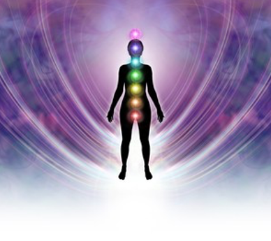
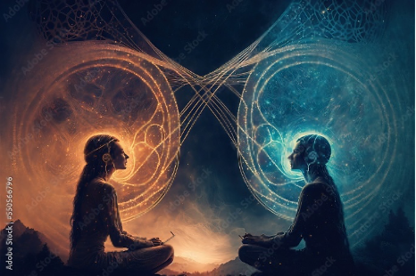

Sanación Energética Integral
Integral Energy Healing
Proceso profundo para restaurar el equilibrio entre cuerpo, mente y energía.
Deep process to restore the balance between body, mind, and energy.
Técnicas: Reiki, limpieza energética y alineación de chakras para liberar bloqueos.
Techniques: Reiki, energy cleansing, and chakra alignment to release blockages.
- Reducción de estrés
- Mayor claridad mental
- Sensación de paz
- Stress reduction
- Greater mental clarity
- Feeling of peace

Cirugía Energética
Energy Surgery
Escaneo del campo energético en meditación profunda para identificar bloqueos relacionados con emociones o manifestaciones físicas.
Energy field scanning in deep meditation to identify blockages related to emotions or physical manifestations.
Proceso: Trabajo sobre zonas de desbalance para restablecer el flujo energético, complementando tratamientos médicos.
Process: Work on imbalance zones to restore energetic flow, complementing medical treatments.
- Liberación de bloqueos
- Mayor conexión con el cuerpo
- Blockage release
- Greater connection with the body

Regresión a Vidas Pasadas
Past Life Regression
Acceso consciente a memorias del alma para comprender patrones, bloqueos y aprendizajes pendientes.
Conscious access to soul memories to understand patterns, blockages, and pending lessons.
Enfoque: Identificación de vínculos kármicos y experiencias de otras vidas que influyen en el presente.
Focus: Identification of karmic bonds and past life experiences that influence the present.
- Claridad sobre el aprendizaje del alma
- Expansión de la conciencia
- Clarity on soul learning
- Consciousness expansion
Comunicación Intuitiva con Animales
Intuitive Animal Communication
Conexión energética con animales para comprender sus emociones, necesidades y mensajes.
Energetic connection with animals to understand their emotions, needs, and messages.
Alcance: Percepción de dolencias físicas o emocionales y orientación para su bienestar.
Scope: Perception of physical or emotional ailments and guidance for their well-being.
- Conexión emocional profunda
- Apoyo en procesos de cambio o enfermedad
- Deep emotional connection
- Support in change or illness processes
Limpieza Energética (Personas y Espacios)
Energy Cleansing (People and Spaces)
Liberación de energías densas acumuladas que afectan el bienestar integral.
Release of accumulated dense energies that affect overall well-being.
Alcance: Limpieza de hogares, oficinas o vehículos para restaurar la armonía del entorno.
Scope: Cleansing of homes, offices, or vehicles to restore environmental harmony.
- Sensación de liviandad
- Renovación energética
- Feeling of lightness
- Energetic renewal
Contacto Espiritual con Seres Trascendidos
Spiritual Contact with Transcended Beings
Espacio de conexión para facilitar la comunicación con seres que ya no están en el plano físico.
A connection space to facilitate communication with beings who are no longer on the physical plane.
Propósito: Brindar paz, cierre y comprensión, apoyando el proceso de transición del alma hacia la luz.
Purpose: To provide peace, closure, and understanding, supporting the soul's transition process towards the light.
- Sanación emocional profunda
- Acompañamiento en el duelo
- Deep emotional healing
- Grief support
Sanación del Niño Interior
Inner Child Healing
Acceso a memorias de la infancia y etapa prenatal (vientre materno) para identificar raíces de heridas emocionales.
Access to childhood and prenatal memories (womb) to identify the roots of emotional wounds.
Propósito: Liberar e integrar experiencias que afectan la vida adulta, reconectando con la esencia.
Purpose: To release and integrate experiences that affect adult life, reconnecting with the essence.
- Mayor amor propio
- Liberación de traumas reprimidos
- Greater self-love
- Release of repressed traumas